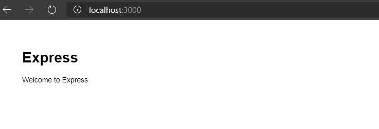

Create a website using NodeJS in 5 mins
#1. What are web applications?
In simple terms a Web Application (or webapp for short) is an application software made available on the web (internet). Any application that is running on a server and can be accessed over the web can be called a webapp.
For example, your company/school website, WhatApp, YouTube etc they're all webapps. In the context of this article we will be talking only about a static website which can be used as a portfolio website or a blog website etc.
#2. Prerequisites
Ensure that you have NodeJS installed, if not you can find the steps to install the same at https://nodejs.org/en/download/. It would be best to install the 12.x LTS (Long Term Support) version.
NodeJS is a platform built on Chrome's JavaScript runtime for easily building fast and scalable network applications. You can learn more about NodeJS and its wonders at https://www.freecodecamp.org/news/what-exactly-is-node-js-ae36e97449f5/
#3. Creating the webapp
Create a folder and run the following command. Follow the steps to initialize the NodeJS webapp.
C:\sample>npm init
This utility will walk you through creating a package.json file.
It only covers the most common items, and tries to guess sensible defaults.
See `npm help json` for definitive documentation on these fields
and exactly what they do.
Use `npm install ` afterwards to install a package and
save it as a dependency in the package.json file.
Press ^C at any time to quit.
package name: (sample)
version: (1.0.0)
description:
entry point: (index.js)
test command:
git repository:
keywords:
author:
license: (ISC)
About to write to C:\sample\package.json:
{
"name": "sample",
"version": "1.0.0",
"description": "",
"main": "index.js",
"scripts": {
"test": "echo \"Error: no test specified\" && exit 1"
},
"author": "",
"license": "ISC"
}
Is this OK? (yes) yes Install express-generator, a web framework for NodeJS to setup a webapp quickly.
npm install -g express-generatorOnce the package is installed, run this command to view the help.
C:\sample>express -h
Usage: express [options] [dir]
Options:
--version output the version number
-e, --ejs add ejs engine support
--pug add pug engine support
--hbs add handlebars engine support
-H, --hogan add hogan.js engine support
-v, --view add view support (dust|ejs|hbs|hjs|jade|pug|twig|vash) (defaults to jade)
--no-view use static html instead of view engine
-c, --css add stylesheet support (less|stylus|compass|sass) (defaults to plain css)
--git add .gitignore
-f, --force force on non-empty directory
-h, --help output usage information We would like to create a static website so run the following command to create a webapp without any view.
C:\sample>express --no-viewNow install all the dependencies using the following command.
C:\sample>npm install#4. Running the webapp
To test if the webapp is setup correctly, run the following command.
C:\sample>npm start
> sample@0.0.0 start C:\sample
> node ./bin/www
You can access your website using http://localhost:3000. The webapp can be accessed by anyone in the network using the url http://{machine-name}:3000 or http://{IP-address}:3000.

You can modify the html files and add your own content from the ./public/ folder in your workspace.

About The Author
Allen Philip is a passionate software engineer with over 6 years of experience dunking coffee, starring at screen, pulling out hair strands and changing the world one commit at a time.